Purdue University
Home
Shihuan Kuang
Research
Publications
People
News
(current)
Resources
Join Us
News
Announcements
Media Articles
02/2022 - Dr. Kuang Named Cancer Center Chair in Stem Cell Biology
Purdue News
|
Agriculture News
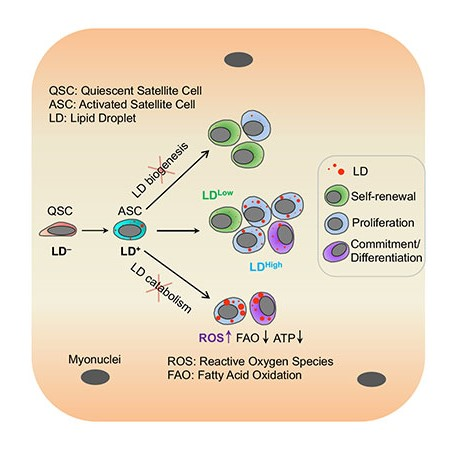
01/2022 - Fat's unexpected role in muscle stem cell fate
Purdue News
|
Science Net China
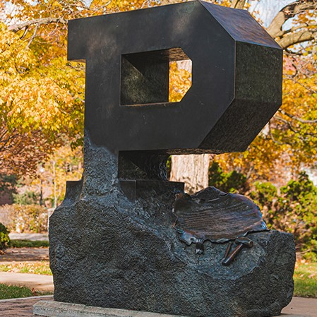
06/2021 - Discovery of new type of stem cells leads to $2.3 million grant
Purdue News
|
Inside Indiana Business
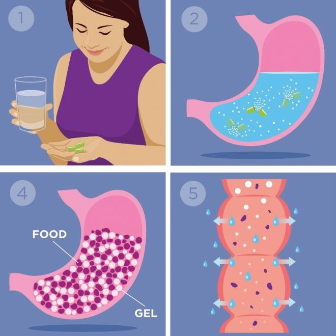
08/2020 - Managing Weight With Technology
IEEE
09/2019 - Bad fat to good fat: Purdue-based startup developing technology aimed at helping treat obesity, diabetes
Purdue News
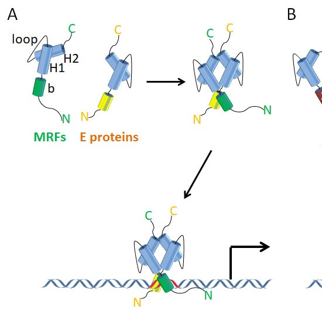
11/2017 - A novel regulator for the generation of muscle stem cells
Atlas of Science
09/2017 - A larger BAT improves metabolism but whiffs on safety
eBiomedicine
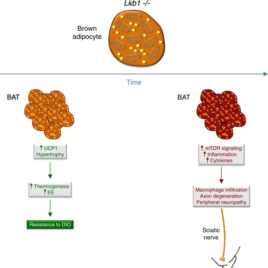
09/2017 - BAT Expansion: A Panacea against Obesity? Lessons from LKB1
eBiomedicine
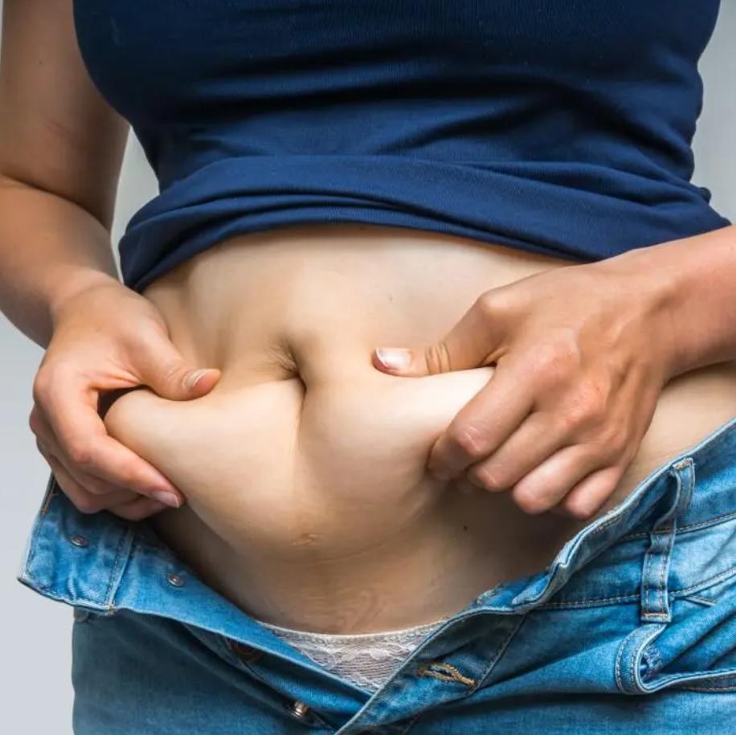
08/2017 - Nanoparticle-drug combo turns white fat to brown fat with potential to treat obesity, diabetes
Purdue News
|
Biodiscovery
|
Medical News Today
|
New Atlas
01/2017 - Tumor suppressor key in maintaining stem cell status in muscle
Purdue News
|
World News
|
SciFeeds
|
Medical Xpress
|
Medical News Today
08/2016 - Purdue researchers discover signaling cascade that drives fatty tumors
Purdue News
|
Science Daily
|
Bionity
|
Medical News Today
12/2014 - Muscular Mysteries
Purdue News
11/2014 - Science on Tap talk to focus on the health benefits of promoting beige adipocytes
Purdue News
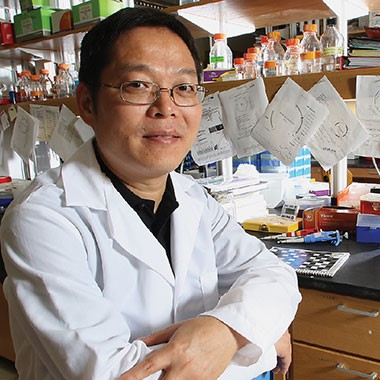
10/2014 - Research award winner focused on future
Purdue Agriculture
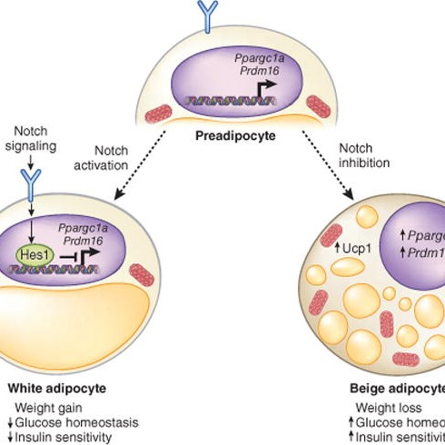
08/2014 - Lightening up a notch: Notch regulation of energy metabolism
Nature Medicine
08/2014 - Going a Notch More Beige
Science Signaling
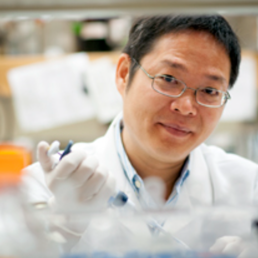
08/2014 - Cell signaling pathway linked to obesity, Type 2 diabetes
Purdue News
|
News Medical
05/2014 - Animal Scientist Kuang earns Purdue Agricultural Research Award
Purdue News
08/2013 - Dr. Kuang Highlighted in Ag Research Spotligh
Purdue Agriculture Research Spotlight
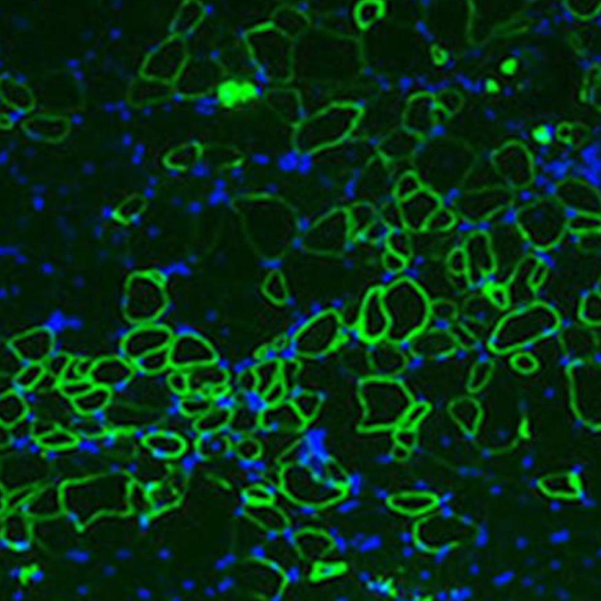
08/2012 - Less Air, More Muscle Repair
The Company of Biologists
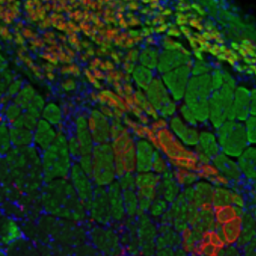
08/2012 - Low oxygen boosts stem cell survival in muscular dystrophy therapy
Purdue News